WELM Usage
What is WELM
WELM or "Windows-Event-Log-Messages" is a tool developed by NSACYBER (Snowdens ex) to dump some event/EVT data and strings from a Windows system. This can then be used to enrich log and trace information in analysis platforms in order reconstruct event messages.
The Windows Event Log Messages (WELM) tool retrieves the definitions of Windows Event Log messages embedded in binaries. The tool's output can be used to create an exhaustive list of event information for an operating system.
They also published datasets for various operating systems but stopped in 2017 for some reason. Most of the core events are the same however its useful to dump newer builds. The code hasnt been updated since 2017 but still works today (2020).
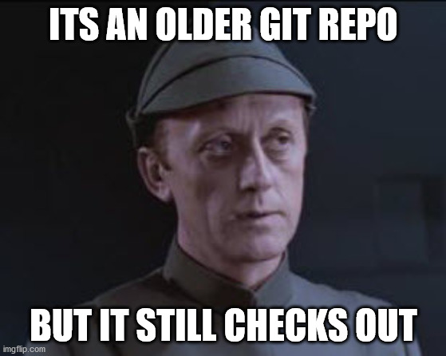
The "Official" way to compile it , is via Visual Studio however I had some concerns on using this because.
- The environment I was working in may have breached the VS community license restrictions , as although welm is opensource (allowed), NSAGOV uses a CC license (why?????) which is not an OSI recognised license (required by MS for OSS + enterprise usage of Visual Studio community).
- Visual Studio is huuuuge (19gb on my test vm)
This worked on my machine (Win 10 Pro 2004) YMMV.
Compiling without Visual Studio
Install MSbuild and DOTNET
You First need to install the .NET build platform (MSBUILD) , you can use the Visual Studio Tools installer for this.
Go to visualstudio.microsoft.com/downloads/
Scroll down to the bit that says "Tools for Visual Studio"
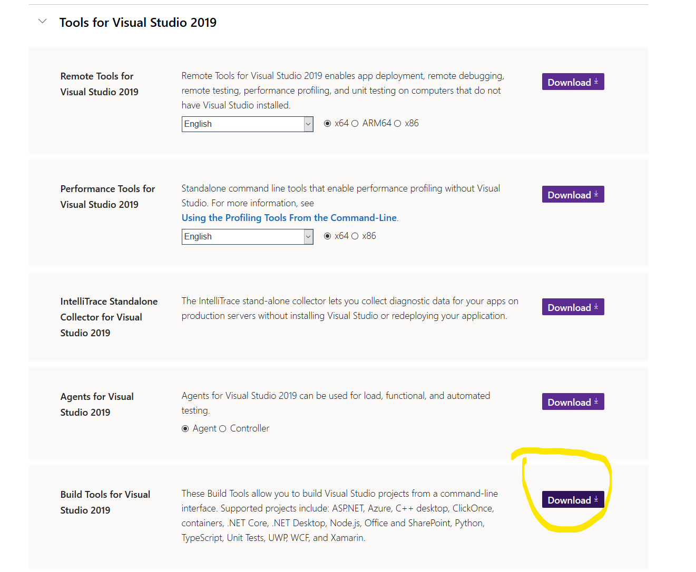
Install the ".Net desktop build tools".
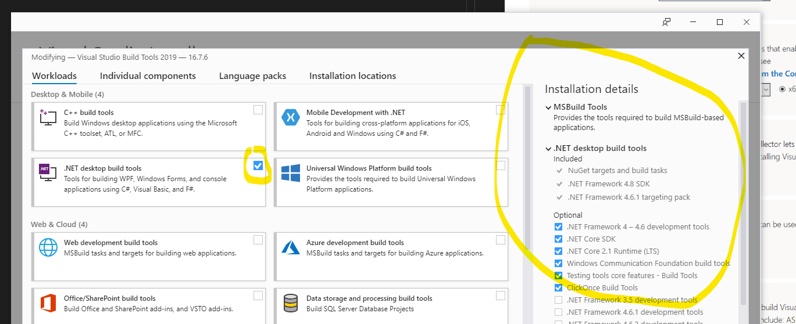
You should now have a special powershell and command prompt for building shiz.
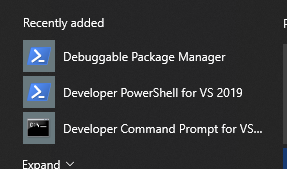
You can add this to Windows Terminal with the following config.
{
// Todo set a icon.
"name": "Visual Studio 2019 PS",
"commandline": "C:\\Windows\\SysWOW64\\WindowsPowerShell\\v1.0\\powershell.exe -noe -c \"&{Import-Module \"\"\"C:\\Program Files (x86)\\Microsoft Visual Studio\\2019\\BuildTools\\Common7\\Tools\\Microsoft.VisualStudio.DevShell.dll\"\"\"; Enter-VsDevShell e8d3f04a}\"",
"hidden": false
}
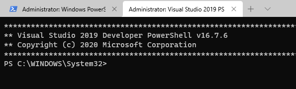
Install Nuget
Now we need nuget to fetch the packages, I found this in the same installer but couldnt find the files once done (no updatedb and locate for me on windows). So I just downloaded it from the nuget site and placed it in C:\ as im super lazy and paths whatever.
Grab the WELM
Download the latest WELM code from https://github.com/nsacyber/Windows-Event-Log-Messages/releases
Extract this ZIP and change to the "welm" folder, should look like this
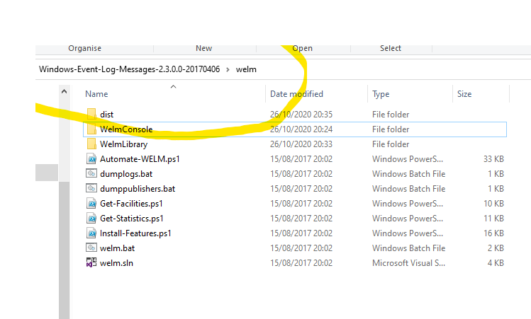
Install packages with nuget
Now we need to install our packages, There are 2 C# projects WelmConsole and WelmLibrary. We need to install into a folder called Packages as thats what our bro Visual Studio would do.
C:\nuget.exe install .\WelmConsole\packages.config -OutputDirectory Packages
C:\nuget.exe install .\WelmLibrary\packages.config -OutputDirectory Packages
Build with MSbuild
Now we can press the button, open your special development powershell we got earlier.
Change directory to our welm folder and cast MSbuild against the project file
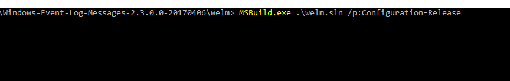
MSBuild.exe .\welm.sln /p:Configuration=Release
You may get some warnings but its not building if you dont get that right???. If you see red you most likely are missing either dontnet4-4.6 SDK or your nuget was wrong.
Run WELM AKA living the dream
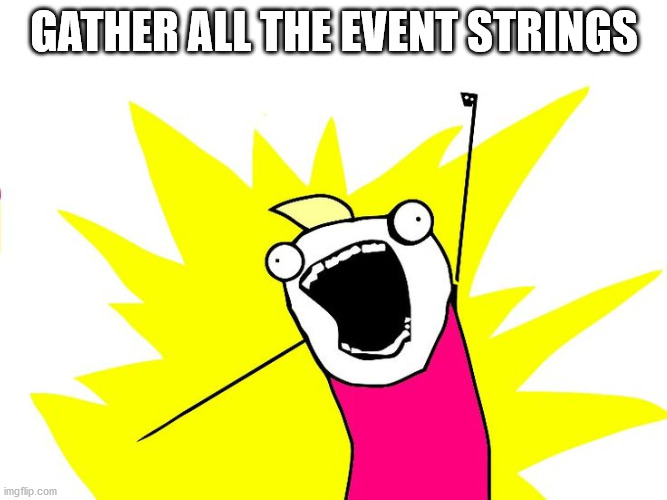
You will now have a ready build under welm\WelmConsole\bin\Release\. You should copy this to machine you want dump strings from . The idea is you want to install anything you want to dump strings from, There are some guides on running it with some setup scripts to help you get the most strings for your money are here.
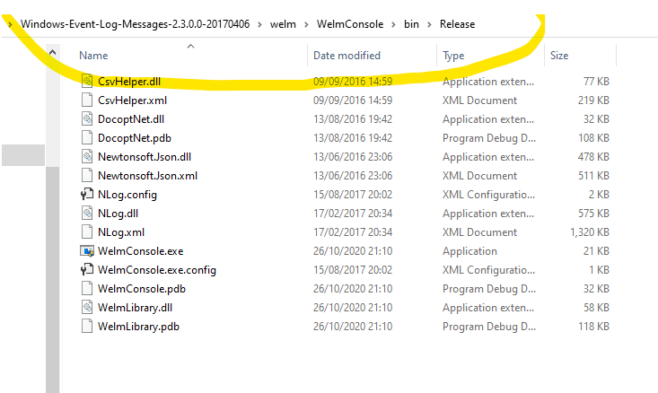
The main binary is WelmConsole.exe. This is what is used to dump details
- Providers - the Event/ETL groupings ie "yadda yadda auditing"
- Logs - The actually files (evtx) that these are written to
- Events - The actually events strings + template options (this is what you normally want)
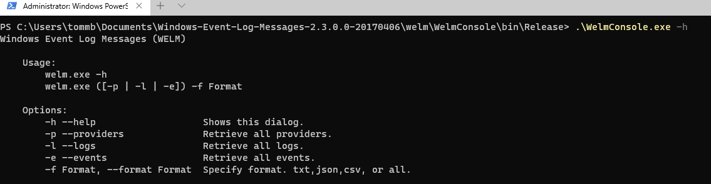
You can run WELM (dont forget to level up to admin) as described in the project wiki for example to dump events to csv
WelmConsole.exe -e -f csv
events.csv produced
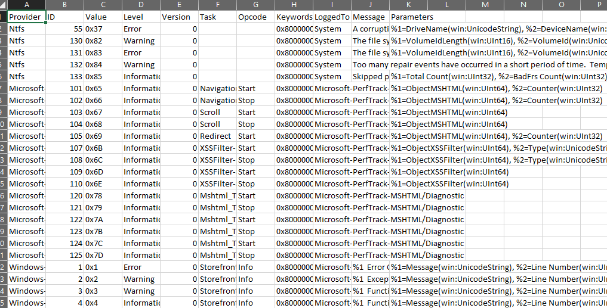
This isnt instant and took at least "a cup of tea making" time on my 2nd gen Ryzen 7. You likely want JSON for other tooling but CSV is great for looking at by hand.